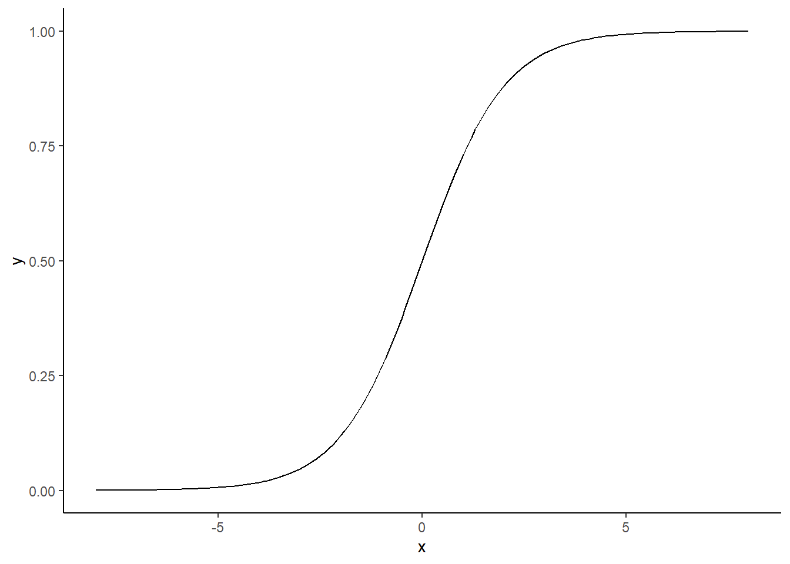

Where is a pitch with location plate_x = -1 and plate_z = 2.5?
Measures of Association for Binary Responses
The goal of our analysis is to assess the effect of the catcher on a called strike. For today’s example, let’s compare Yadier Molina and Buster Posey.
Name the response variable. Classify it as categorical or quantitative.
Name the explanatory variable. Classify it as categorical or quantitative.
Here is summary data from May 2019 for Molina and Posey.
library(tidyverse)library(knitr)library(broom)# Retrieve pitch level data from May 2019. (See previous lesson.)pitches <-readRDS("statcast_may_2019.rds")# Add catcher's name to the pitch data from the MLB master list.# This CSV file is available at https://www.smartfantasybaseball.com/tools/.mlbIDs <-read_csv("./PLAYERIDMAP.csv")pitches <- pitches |>left_join(select(mlbIDs, PLAYERNAME, MLBID),by =c("fielder_2"="MLBID")) |>rename(catcher_name = PLAYERNAME)# Look only at pitches taken when Molina or Posey are catching.pitches_taken_subset <- pitches |>filter(catcher_name %in%c("Buster Posey", "Yadier Molina"), description %in%c("ball", "called_strike"))# Form a 2x2 table.pitches_taken_subset |>count(catcher_name, description) |>pivot_wider(id_cols = description, names_from = catcher_name,values_from = n) |>kable(caption ="Results of taken pitches (May 2019)")
Results of taken pitches (May 2019)
description
Buster Posey
Yadier Molina
ball
775
1007
called_strike
364
533
Calculate the proportion of called strikes for each catcher.
Calculate the odds of a called strike for each catcher.
Calculate the log odds of a called strike for each catcher.
Calculate the odds ratio for a called strike comparing Yadier Molina to Buster Posey.
What are the limitations of this analysis in assessing the effect of catcher on called strikes? What are we failing to consider, and how might a model-based approach improve our analysis?
Logistic Regression
Consider the results in Table 1 again. We can apply the following logistic regression model to our data. Let \(Y_i\) be a random variable for whether pitch \(i\) was a called strike such that \(Y_i \sim \text{Bernoulli}(\pi_i)\) and
\[\log\left(\frac{\pi_i}{1-\pi_i}\right) = \beta_0 + \beta_1 \text{Molina}_i\] where \(\text{Molina}_i = 1\) if Yadier Molina was the catcher and \(\text{Molina}_i = 0\) if Buster Posey was the catcher.
\(z=\beta_0 + \beta_1 \text{Molina}_i\) Maps the output to a continuous value from \([-\infty,\infty]\). What would a coefficient even mean here?
We can use the sigmoid function, \(\sigma(z)=p=\frac{1}{1+e^{-z}}\) to map any continuous value to a number between \([0,1]\) (i.e. a probability).

Ok, but now we have an even more complicated function with \(z\) buried in the denominator. Let’s get \(z\) by itself.
\[\frac{1}{p}=1+e^{-z}\]\[\frac{1}{p}-1=e^{-z}\]\[\frac{1-p}{p}=e^{-z}\] Take the recipricals of both sides and we get: \[\text{odds}(p)=\frac{p}{1-p}=e^{z}\] How do we get \(z\) by itself? \[\text{log}(\frac{p}{1-p})=\text{log}(e^{z})=z\] So, in logistic regression, the linear predictor is